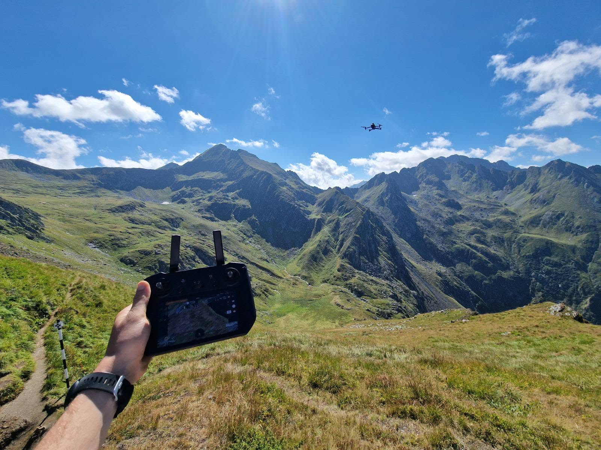
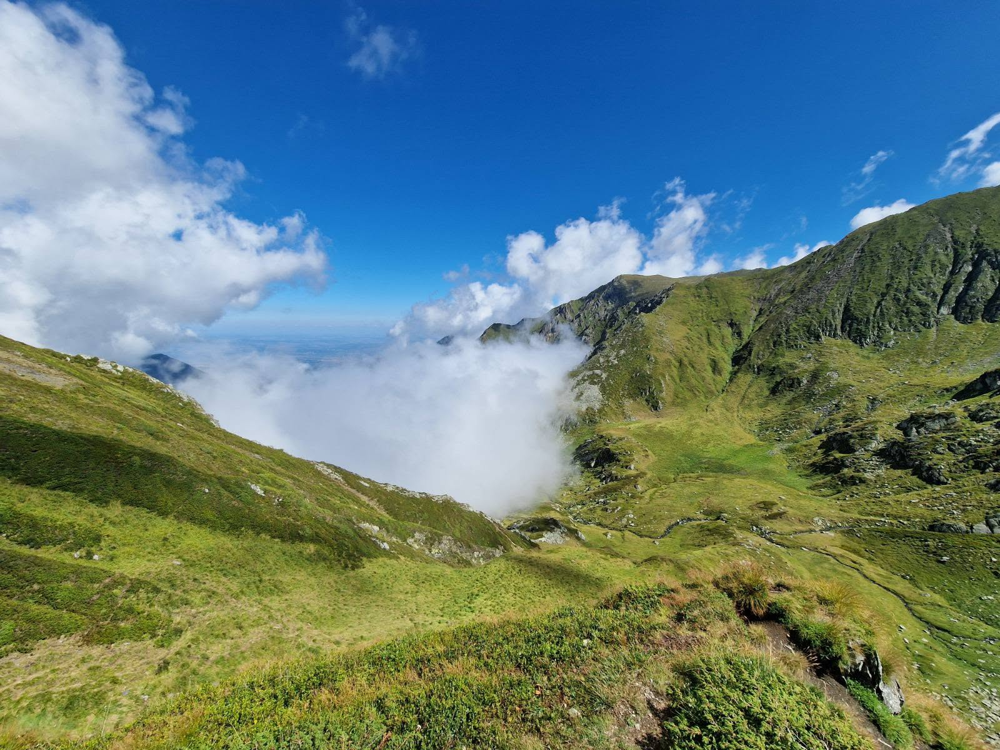
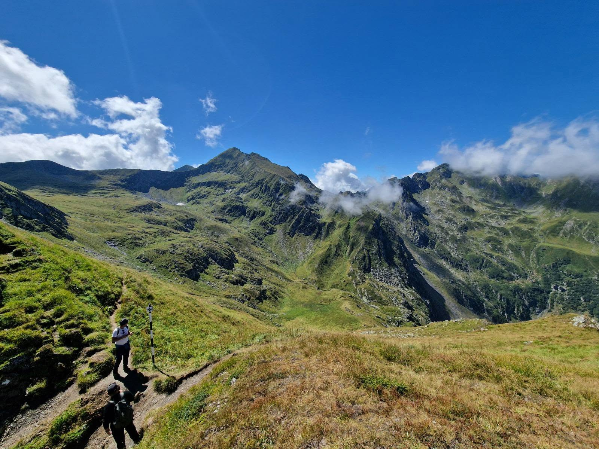

Identificarea pajiștilor montane cu ajutorul UAV
2026Știința și tehnologia ajung acolo unde terenul o cere. De această dată, la peste 2.100 de metri altitudine, în Munții Făgăraș, la solicitarea Agenției de Plăți și Intervenție pentru Agricultură (APIA).
Activitatea a constat în însoțirea echipei de control și utilizarea dronelor pentru identificarea și cartarea unor pajiști montane greu accesibile. Această experiență demonstrează în mod direct cât de importante sunt astăzi pregătirea de specialitate, competențele practice și integrarea noilor tehnologii în teren.
Reperele Activității
- Suport instituțional: Asistență tehnică de specialitate oferită echipelor APIA pentru validarea datelor din teren.
- Mediu extrem de operare: Misiuni de survol executate în condiții montane dificile, la peste 2.100 m altitudine.
- Tehnologie aplicată: Identificarea precisă a parcelelor agricole folosind echipamente UAV, depășind limitările topografice.



Platformă de predicție și avertizare pentru mana cartofului (Phytophthora infestans)
Grant AOȘR 2026-2027Sistem de agricultură de precizie fundamentat pe o Arhitectură Neuro-Simbolică, dezvoltat pentru specia Solanum tuberosum L.
Sistemul separă rigurozitatea matematică de capacitatea de sinteză: procesează determinist telemetria prin ecuații epidemiologice validate, utilizând ulterior un motor de Inteligență Artificială Generativă restrictivă pentru a formula recomandări în limbaj natural, eliminând riscul „halucinațiilor” algoritmice.
Rezultate & Funcționalități Cheie
- Anticiparea ferestrelor critice de infecție calibrată prin teledetecție multispectrală UAV și evaluări fitopatologice vizuale (Ground-Truth).
- Dashboard dedicat cu registru fitosanitar digital pentru managementul integrat al bolilor (IPM).
- Optimizarea ferestrelor de intervenție fungicidă și reducerea amprentei chimice asupra solului.
Platformă de Predicție Multi-Risc pentru specia Malus domestica
2026Platforma de Predicție Multi-Risc este un sistem de agricultură de precizie fundamentat pe o Arhitectură Neuro-Simbolică. Aceasta transformă datele brute de microclimat și prognoză în decizii agronomice proactive, operând printr-un pipeline de date pe 5 niveluri.
Sistemul separă rigurozitatea matematică de capacitatea de sinteză: procesează determinist telemetria prin modele validate științific (Nivelul Simbolic), iar ulterior utilizează un motor de Inteligență Artificială Generativă (Nivelul Cognitiv) pentru a formula recomandări în limbaj natural.
Rezultate & Funcționalități Cheie
- Anticiparea presiunii patogenilor, dinamicii dăunătorilor și a impactului stresului abiotic.
- Calibrarea constantă a predicțiilor printr-o buclă de validare din teren (Ground-Truth).
- Date distribuite în 4 module de expertiză pentru optimizarea intervențiilor și reducerea amprentei chimice.
Atelier ArduFarm
2026Atelierul ArduFarm din cadrul evenimentului EduLabFarm transformă elevii de liceu în arhitecți ai tehnologiei agricole, explorând convergența dintre electronică și agronomie.
Participanții învață să utilizeze microcontrolerele Arduino și NodeMCU pentru a optimiza resursele unei ferme moderne. Este o experiență practică care dezvoltă competențe esențiale în programare, electronică și gândire logică, pregătind tinerii pentru viitorul digitalizat al industriei agro.
Sisteme Critice Implementate
- Monitorizarea precisă a microclimatului și analiza calității aerului.
- Integrarea senzorilor termici de precizie pentru diagnoză.
- Automatizarea inteligentă a irigațiilor prin logică condițională.


Platformă de pre-screening pentru fenotiparea stresului hidric la cartof
2025Dezvoltarea și validarea unei platforme de fenotipare IoT cu costuri reduse, destinată pre-screening-ului toleranței la secetă la cartof.
Sistemul integrează controlul automatizat al irigării, gestionat printr-o arhitectură Arduino cu senzori capacitivi multiplexați (6 senzori/linie) și monitorizarea microclimatului în timp real via ESP8266.
Metodologie & Validare
- Algoritm de tip mașină de stări pentru menținerea precisă a pragurilor de umiditate (60% optim vs. 35% stres).
- Inducerea reproductibilă a stresului hidric și discriminarea statistică a răspunsurilor fiziologice între genotipuri contrastante.
- Instrument metodologic robust și scalabil, care optimizează selecția preliminară a soiurilor anterior testărilor agronomice de câmp.


Tehnologii 4.0 (FDI 2024 F0060; FDI 2025 F0383)
2024 - 2025Creșterea competitivității bazei de practică a studenților prin inovare și integrarea tehnologiilor specifice Agriculturii 4.0 la standarde de performanță.
Activitatea s-a bazat pe instruirea practică intensivă în preluarea, calibrarea și procesarea seturilor de date geospațiale.
Echipamente & Activități
- Fotogrammetrie și survol aerian utilizând drone comerciale și agricole (UAV-uri).
- Gestiunea utilajelor prin sisteme de ghidaj GPS (RTK).
- Ridicări topografice și trasări de limite folosind Stația Totală.


Prototipare solar inteligent
2024Proiectarea și construcția prototipului de solar inteligent a avut ca obiectiv demonstrarea integrării tehnologiilor IoT în managementul spațiilor protejate.
Acest model funcțional validează capacitatea de a proiecta o arhitectură hardware-software completă, de la preluarea datelor brute la acționarea mecanică și monitorizarea în cloud, aplicabilă direct în agricultura de precizie.
Arhitectură & Soluții
- Coordonare pe bază de microcontroler cu conectivitate Wi-Fi pentru achiziția în timp real a datelor de microclimat.
- Interfață mobilă dezvoltată în platforma Node-RED pentru telemetrie și control de la distanță.
- Automatizarea sistemului de irigare prin integrarea controlată a unei micropompe.


Inginer Agronom - Consultanță agricolă
2020 - 2022Coordonarea operațiunilor tehnice de teren și gestionarea conformității agricole. Activitatea a inclus ridicări topografice, inventarierea și trasarea parcelelor utilizând echipamente GPS de precizie.
Responsabilități & Activități
- Monitorizarea aeriană a stării de vegetație prin intermediul tehnologiei UAV.
- Elaborarea fișelor tehnologice pentru planificarea randamentului culturilor fermei.
- Întocmirea rapoartelor oficiale pentru instituțiile publice (APIA, Camere Agricole, Primării), garantând alinierea legislativă.

Proiectare și construcție de sisteme electrotehnice
2021 - PrezentGestionarea integrală a fluxului de dezvoltare hardware pentru sisteme de automatizare, de la proiectarea schemelor și rutarea cablajelor imprimate (PCB), până la asamblarea, testarea și calibrarea prototipurilor fizice.
Această expertiză la nivel de componentă oferă independența tehnică necesară pentru construirea, integrarea și depanarea echipamentelor mecatronice și IoT personalizate.
Portofoliu Tehnic
- Dezvoltarea modulelor telemetrice complexe pentru monitorizarea factorilor de mediu.
- Sisteme dedicate de management al puterii și distribuție a sarcinilor electrice.
- Fabricarea de plăci electronice de precizie validate pentru scenarii practice de Agricultură 4.0.


Implementarea și testarea unui sistem automatizat de irigare prin picurare
2020 - Lucrare de DiplomăLucrarea a vizat proiectarea, implementarea și testarea unui sistem automatizat de irigare prin picurare pentru culturi legumicole (salată și ridiche de lună).
Automatizarea a fost realizată cu ajutorul unui microcontroler Arduino UNO conectat la senzori de umiditate a solului. Debitul apei a fost optimizat printr-un modul inteligent step-down LM2596.
Concluzii & Rezultate
- Sistemul a funcționat autonom pe parcursul ciclului de vegetație, declanșând pompa de apă printr-un releu exclusiv la scăderea umidității sub pragul setat.
- S-a validat eficiența irigării de precizie prin reducerea consumului de apă și inhibarea dezvoltării buruienilor pe intervalele dintre rânduri.
- A fost consemnat și discutat un fenomen de hidrotropism extrem la nivelul sistemului radicular.


Finalist FameLab
2019Finalist în cadrul competiției internaționale de comunicare a științei FameLab, organizată de British Council România. Evenimentul a vizat evaluarea abilităților de a sintetiza și expune concepte academice complexe într-un format strict de 3 minute.
Focusul Prezentării
- A explorat un domeniu interdisciplinar de biofizică vegetală: influența frecvențelor acustice asupra dezvoltării plantelor.
- Argumentația a explicat mecanismele prin care undele sonore pot declanșa răspunsuri fiziologice la nivelul țesuturilor vegetale.